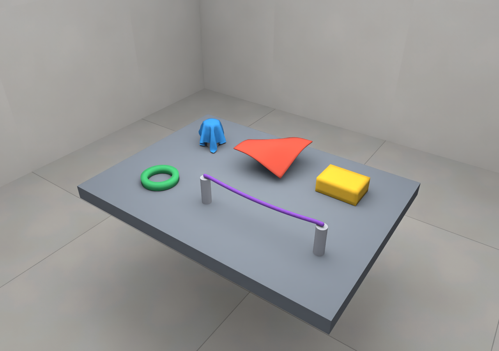

柔性重建与示例资产报告
整理当前 Real2sim 工程的柔性建模与重建路径，并交付同一场景中的针织布、毛巾、海绵、橡胶圈和绳索。
本次成果：程序化示例资产生成、原生场景编译、Newton VBD 运行及展示视频。没有输入实拍参考，因此不将这些示例表述为真实物体重建完成或材料已标定。
1. 物体生成后的展示视频
实际运行初始场景：两块布落在各自支柱上，海绵和橡胶圈落到台面，绳索两端固定并在重力下下垂。视频来自逐帧 RTX 渲染的 Newton 状态。
查看稳定状态总览图

2. 五个柔性资产
每个资产包含 geometry.npz、初始参考网格 rest.obj、展示网格 displayed.obj 和 metadata.json。总包保留完整原生场景、材料参数及许可证。
| 物体 | 模型与尺寸 | 导出顶点 | 表面三角形 | 四面体 |
|---|---|---|---|---|
蓝色针织布jersey_cloth |
单层三角膜 0.28 × 0.28 m；22 × 22 网格；SHIRT_JERSEY |
529 | 968 | 0 |
红色毛巾terry_towel |
双面厚壳 + 四面体内芯 0.28 × 0.28 m；TERRY_TOWELLING；厚 5 mm |
1,058 | 2,112 | 2,904 |
黄色海绵foam_sponge |
四面体体积软体 0.20 × 0.14 × 0.075 m；10 × 7 × 4 单元 |
440 | 552 | 1,400 |
绿色橡胶圈rubber_ring |
闭环四面体软体 主半径 75 mm；方截面半宽 15 mm；40 段 |
160 | 320 | 200 |
紫色绳索flexible_cable |
胶囊链 + cable joints 长 0.56 m；半径 8 mm；24 段；两端夹固 |
302 | 600 | 0 |
针织布为三角膜。毛巾的原生 slab 模型有上下表皮及体积内芯，不能按单层膜理解。绳索采用 25 个中心线节点对应 24 个胶囊段；表中的 302 顶点 / 600 三角形仅为导出显示管面。所有几何均为米制、Z 向上、世界坐标。
材料与边界条件
- 针织布：上游
SHIRT_JERSEY预设；毛巾：TERRY_TOWELLING预设。预设不能替代目标织物测量。 - 海绵：Young 模量 20 kPa、Poisson 比 0.25、密度 60 kg/m³。橡胶圈：80 kPa、0.35、600 kg/m³，属于本次演示假设。
- 绳索：原生胶囊链与 cable joints；两端在世界坐标夹固。布、海绵与橡胶圈不设永久夹固。
- 台面尺寸 1.32 × 0.96 m，台面高度 0.75 m；控制频率 60 Hz，每控制步 24 个物理子步。
3. Real2sim 柔性重建部分整理
组件关系：Real2sim 管理输入、会话、运行与证据；外部编码代理检查参考并编写资产；内部兼容模块 robosimstudio* 负责编译场景、原生交互 UI 和渲染；柔性动力学由 Newton VBD 提供。CLI 的 agent 是 UI 入口，不是自动从任意视频推断几何和接触的内置大模型。
3.1 先选物理表示
| 对象 | 必要几何 | 原生入口 | 需要明确的量 |
|---|---|---|---|
| 薄布、膜、袋 | 有一致拓扑的三角中面 | rss.sheet / ClothSpec | 面密度、厚度、拉伸/弯曲、接触半径、静止角、固定点 |
| 厚布、泡棉、橡胶 | 四面体体积；厚布可采用原生 slab | rss.sponge / SoftSpec；ClothSpec slab | 体密度、Young/Poisson、阻尼、静止体积、材料与约束 |
| 绳索、线缆、软管 | 有顺序的中心线及截面半径 | rss.rod / RodSpec | 长度、半径、弯曲/拉伸、分段、端部夹固 |
3.2 从真实输入到可编辑资产
- 保存输入。登记照片、视频、扫描或现成几何，保留来源、许可、原始文件与哈希。视频选择接触前、操作中、释放后及最终状态。
- 确定尺度与静止形状。统一米制和 Z-up，说明参考是卸载形状还是已经下垂的受力形状。后者可能含预应变，不能直接当作无应力参考。
- 准备模拟拓扑。布料提取三角中面；体积软体提供四面体；绳索提供中心线。闭合扫描表皮不等于布料中面。复杂空腔应提供经检查的体网格。
- 显式设定力学与接触。记录每个材料参数为 measured / retrieved / assumed / fitted，设置支撑、重力、碰撞半径和已知载荷。操作引导或固定点需要标为作者施加的约束。
- 创建原生会话。用
session-init初始化，编辑scene.py，绑定顶层scene，将资产依赖放在会话目录。使用原生拖拽和控制面板检查。 - 运行并保留证据。使用
scene-run记录轨迹、时间戳、视频与运行报告。仅修改外观时，通过scene-render重绘相同轨迹，不必重新执行物理。 - 按请求验证和交付。分别判断几何、外观、执行、接触和动力学；存在真实测量时再拟合并在独立条件下验证，最终保留可编辑源文件及可移植依赖。
3.3 两条使用路径
原生交互路径：session-init → scene.py → agent / session-serve → session-ctl → scene-run / scene-render。适合资产查看、拖拽、完整场景和展示视频，本次采用这条路径。
独立柔性 bundle：build-deformable → validate-deformable → fit-deformable。直接 Newton 路径支持 triangle cloth 和 tetrahedral soft；绳索仍走原生场景。输出 manifest、geometry.npz、surface.obj 和验证轨迹，准备完成与动力学通过是不同阶段。
独立 bundle 的最小请求示例：四面体软体
{
"id": "sample_soft", "category": "soft_object",
"simulator": "newton", "behavior": "deformable",
"deformable": {
"kind": "soft", "mesh": "soft_mesh.npz",
"scale_m_per_unit": 1.0, "scale_source": "assumed",
"aligned_z_up": true,
"rest_state": "unloaded_reference", "rest_source": "assumed",
"material": {
"young_pa": 20000, "poisson_ratio": 0.25,
"density_kg_m3": 60, "damping_s": 0.005, "friction": 0.5
},
"simulation": {"timestep_s": 0.001, "iterations": 10,
"gravity_m_s2": [0, 0, -9.81], "ground_z_m": 0.0}
}
}接口结构按本地文档整理，示意请求未在本次任务中另行执行。soft_mesh.npz 需提供有限 vertices 与有效 tets，且与本例地面配置不穿插。
4. 本次运行与证据边界
| 执行环境 | Newton 1.6.1 · Warp 1.18.0 · CUDA:0 / NVIDIA GeForce RTX 5090 · RTX |
|---|---|
| 本次视频运行 | 完成 360 / 360 步，仿真时长 6.00 秒，运行状态 completed |
| 状态检查 | 所有记录状态有限；每个控制步检查，不代表已检查所有接触与每个物理子步。 |
| 网格应变诊断 | 9,148 条网格边；最大拉伸 9.90%；最大压缩 31.92%。这是全场景实际三角形/四面体边长变化的诊断，不表示与真实材料匹配。 |
| 可复现性 | 完整原生场景、五个导出资产、原始橡胶圈网格、材料 spec、依赖版本和 SHA-256 文件清单。 |
| 未完成的真实重建验证 | 无实拍参考、无几何/外观对齐评分、无已知载荷标定、无独立测量轨迹；不宣称模型已完成真实物理校准。 |
独立 validate-deformable 可检查真实边应变、固定点漂移、四面体反转、三角形塌陷，以及剔除最佳刚体变换后的非刚性位移。本次原生视频运行记录了有限值检查及实际网格边应变，尚未对接触、四面体反转或真实材料匹配建立通过结论。
若后续提供米制顶点轨迹和已知实验条件，可用 fit-deformable 比较 Young 模量候选，再以独立录制和误差阈值验证；拟合不会自动恢复密度、摩擦、厚度或未知载荷。
5. 其他人能否直接使用这些资产？
可以在兼容环境中直接使用。拿到完整资产包并安装本项目 Real2sim 原生运行时后，可直接加载其中的 native-session/scene.py，重现五个物体的柔性场景。物体数据和橡胶圈网格使用包内相对路径，不依赖本机绝对路径、机器人库或原始扫描文件。
OBJ 可导入支持该格式的三维软件查看几何；完整材料、质量、约束和接触行为保存在原生场景与 metadata 中。在其他物理引擎中使用，需要重新映射这些设置并验证。本报告不提供资产下载入口，资产包单独交付。
资产包结构与复现
real2sim-flexible-assets.zip
├── assets/ # 五个物体的 NPZ / OBJ / metadata
├── native-session/ # 完整同场景的 scene.py 及相对路径依赖
├── references/ # 柔性重建与会话文档、运行依赖版本
├── licenses/ # 上游来源、许可证和 NOTICE
├── asset-manifest.json
├── run-summary.json
├── SHA256SUMS.json
└── README.txt在已经安装本项目 Real2sim 原生运行时的环境中，解压资产包后执行：
real2sim agent --session native-session --device cuda:0 --renderer rtx --panels all --resume
real2sim scene-run --session native-session --device cuda:0 --renderer rtx --steps 360 --camera overview --capture-every 4 --record --compact几何导出不自动保留另一模拟器中的等价柔性行为。OBJ 适合几何检查；完整力学与接触使用原生 scene.py。displayed.obj 是已受力的展示形状，不应重新解释为应力自由的静止网格。
单文件 HTML 内嵌视频和总览图，直接打开即可查看；公开页面使用相对路径媒体。资产包单独提供，不随本页面公开下载。
内容依据
- 本地
real2sim-toolkit/skills/real2sim/references/deformable.md、sessions.md、agent.md，副本已随 ZIP 提供。 - 本地原生实现
_domain_packs/cloth.py、soft.py、rod/；导出数值来自实际编译后的模型。 - 橡胶圈生成算法源于 RoboSimStudio 的四面体示例，Apache-2.0；本包另记录尺寸修改与正体积朝向修正。